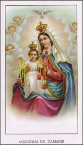
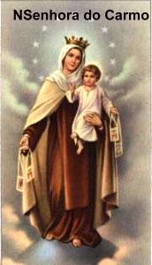
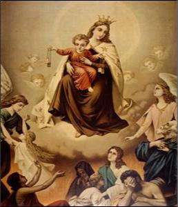
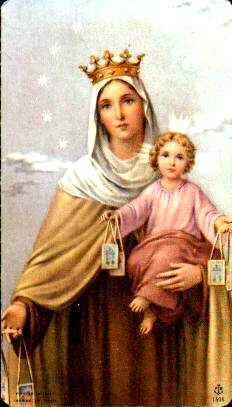

HISTÓRIA DO
CARMELO
O Monte Carmelo é uma montanha
com 170 metros de altitude que fica na cordilheira de mesmo nome, em Israel
(antiga Palestina), com
34 quilômetros de extensão limitando-se ao norte com Haifa, cidade marítima,
pelo sul com as terras de Cesaréia, pelo leste com a planície do Esdrelon,
e a oeste com o mar Mediterrâneo. O pico mais elevado da cordilheira tem
aproximadamente 525 metros acima do nível do mar, e é denominado Sacrifício.
Pela sua notável posição geográfica, entre duas planícies e o mar, desde a Idade
da Pedra, as suas numerosas grutas serviram de habitação, conforme estudos
antropológicos que foram realizados e os esqueletos que ali foram encontrados.
Na lista das cidades de Tutmósis III (século XV antes de CRISTO) o Carmelo é
chamado de “Cabo Santo”, nome que se supõe de um culto antigo que se
fazia por lá, em honra do próprio Monte ou de seu Baal (conforme M. Avi-Yonah,
em seu livro: “Mount Carmel and the God of Baalbek”). Na História Sagrada
o Monte ficou famoso, por causa da disputa entre o profeta Elias e os sacerdotes
fenícios de Baal. Nele os sacerdotes sacrificavam em honra de sua divindade Baal,
da mesma forma que Elias fazia os sacrifícios em honra de DEUS. E foi neste mesmo
lugar que o profeta, diante das autoridades e do povo de Israel, provou
a impotência e ineficácia do deus Baal e mostrou a grandeza e o
valor do verdadeiro DEUS. O fato aconteceu assim:
No fim do século IX aC, (874-853
antes de CRISTO), Acab reinava loucamente Israel junto com sua sanguinária
esposa Rainha Jezabel, que logo mandou matar todos os profetas de DEUS e
destruiu os altares de sacrifícios, trazendo para Israel os sacerdotes de Baal
de Tiro, permitindo e incrementando o culto aquela divindade. O SENHOR mandou-lhe um
pesado castigo, infringindo uma terrível seca ao país, deixando Israel sem
condições de produzir alimentos e com uma minguada quantidade de água para o
consumo humano, para o gado e a criação em geral. No final do terceiro ano de seca,
DEUS chamou o profeta Elias e mandou que avisasse Acab, que ia acabar com a
seca. O SENHOR, misericórdia infinita, infundiu luz na mente do profeta para ele
alertar ao Rei e a Rainha sobre aquele modo insensato de viver e administrar o
reino.
Acab recebeu Elias com frieza,
censurando-o: “Ai está o
flagelo de Israel”! (1 Rs 18, 17). O
profeta respondeu: “Não
sou eu o flagelo de Israel, mas tu e tua família, por que abandonaste DEUS e
seguiste os baals. Pois bem, manda que se reúna junto a mim, no Monte Carmelo,
todo o Israel, com os quatrocentos e cinquenta profetas de Baal, que comem à mesa
de Jezabel”. (1 Rs 18, 18) Elias
quis provar ao Rei que o deus Baal não atuava e não tinha qualquer força, e
assim, queria lhe mostrar o verdadeiro poder Divino.
Todo o povo foi reunido no Monte
Carmelo e Elias se aproximando perguntou: “Até quando permanecerão na dúvida? Se JAVÉ é DEUS segui-o, mas se é Baal,
segue-o”. (1 Rs 18, 21) E o povo não pode lhe
responder. Então Elias mandou os quatrocentos e cinquenta sacerdotes de Baal esquartejar
um novilho e colocá-lo sobre a lenha, no altar de sacrifícios, sem por fogo. Ele faria
a mesma coisa com outro novilho. Depois mandou que eles invocassem o nome do deus deles
e ele também ia fazer a mesma coisa. O deus que respondesse enviando fogo para queimar
o sacrifício (holocausto) era o DEUS verdadeiro. Os sacerdotes rezaram, chamaram
a sua divindade e até
gemeram, desde a manhã até o meio dia e o deus Baal não respondeu. Elias então zombou,
mandando que eles gritassem mais alto, podia ser que Baal estivesse tirando uma
soneca! E nada aconteceu com o novilho deles. Então Elias pediu ao povo para se
aproximar e na hora da oferenda, rezou: “JAVÉ, DEUS de Abraão, de Isaac e de Israel, hoje todos ficarão sabendo
que TU és DEUS em Israel, que sou TEU servo e que é por TUA ordem que fiz todas
essas coisas. Responda-me JAVÉ, responda-me, para que este povo reconheça que TU és
JAVÉ, o DEUS, e que convertes os corações deles”!
(1 Rs 18, 36-37) Então imediatamente caiu o fogo de JAVÉ e consumiu o holocausto (novilho)
e toda a lenha, para que todos conhecessem quem era o verdadeiro DEUS e se convertessem.
O povo admirado presenciou tudo e respeitosamente todos se prostraram com o rosto no chão
dizendo e repetindo: “JAVÉ
que é o DEUS! JAVÉ que é o DEUS”. Os profetas
e sacerdotes de Baal foram todos presos e mortos. (1 Rs 18, 39-40)
Elias se aproximou do Rei Acab e
recomendou que ele voltasse e ficasse no palácio: “Sobe, come e bebe, pois estou ouvindo o barulho da chuva”.
E a seguir, o profeta subiu ao cume do Monte
Carmelo para rezar, e então, viu se elevar do mar uma pequena nuvem como se fosse à
mão de uma pessoa. Num instante o Céu escureceu e caiu uma forte chuva beneficiando
toda a região. (1 Rs 18, 16-45)
 Ao longo de sua vida, o profeta
sempre revelou um imenso e ilimitado amor a DEUS, que lhe dava forças e a
inspiração necessária à sua caminhada existencial. Recebeu do Altíssimo, uma
quantidade preciosa de dons e virtudes , que impulsionava as suas atitudes,
estando sempre pronto a agir dentro da justiça e do direito. O seu exemplo foi
seguido por muitos, fundando uma admirável escola de profetas, da qual, o
profeta Eliseu foi o seu primeiro
discípulo.
Ao longo de sua vida, o profeta
sempre revelou um imenso e ilimitado amor a DEUS, que lhe dava forças e a
inspiração necessária à sua caminhada existencial. Recebeu do Altíssimo, uma
quantidade preciosa de dons e virtudes , que impulsionava as suas atitudes,
estando sempre pronto a agir dentro da justiça e do direito. O seu exemplo foi
seguido por muitos, fundando uma admirável escola de profetas, da qual, o
profeta Eliseu foi o seu primeiro
discípulo.
Por outro lado, aquela nuvem
benfazeja e em forma de mão enviada por DEUS, que deu origem aquela caridosa e
providencial chuva, passou a ser interpretada como uma preciosa Intercessora,
que trabalhou maravilhosamente a serviço do SENHOR e em benefício do povo,
e por isso mesmo, foi compreendida como sendo obra da própria MÃE DE DEUS.
Quando os Cruzados chegaram à
Terra Santa, no século XII, divulgou-se que encontraram vivendo no Monte
Carmelo, uma colônia de eremitas que afirmavam ter o profeta Elias como fundador
e patrono, e a MÃE DE DEUS como a VIRGEM DO CARMELO. O grupo foi aumentando com a
adesão de cruzados, que não queriam continuar com a guerra e almejavam a paz e uma
existência mais dedicada às orações.
No meio dos cruzados, entre os
anos 1153 e 1159, também estava Bertoldo um soldado idealista que veio da
Europa. Inspirado no profeta Elias, foi para o Monte Carmelo, e lá, com o
auxílio de companheiros e de eremitas que viviam no local, construiu uma pequena
Ermida perto da gruta de Elias e próximo a algumas ruínas existentes.
Provavelmente em 1209, aqueles
homens almejando organizar a Comunidade em que viviam, pediram ao Bispo Alberto,
Patriarca de Jerusalém, que era um homem piedoso e de reconhecida sabedoria e
prudência, que lhes fizesse uma Regra de vida, a qual receberam com respeito e a
seguiram com muita devoção. Posteriormente fizeram aquele documento chegar às
mãos de Sua Santidade o Papa Honório III, que o aprovou integralmente no dia 30
de Janeiro de 1226.
Naquele local ermo, vivendo
abrigados na própria natureza, aqueles homens puderam cultivar ardorosamente a
devoção a VIRGEM MARIA, manifestando a grandeza de seu amor. Inicialmente ao ar livre,
unidos ao redor da rústica Ermida, junto à fonte de Elias, piedosamente rezavam a
VIRGEM DO CARMELO, exaltando e louvando a bondade Divina. Na continuidade dos
anos construíram um modesto Mosteiro que atendeu as suas necessidades.
Entretanto a ameaça otomana
estava sempre presente, lutando contra os cristãos das Cruzadas e não desistindo
de dominar a Terra Santa, mantinham uma sangrenta e impiedosa luta. Em consequência,
alguns soldados cruzados, que já viviam com os eremitas do Monte Carmelo, com receio
do inimigo mortal, desde o ano 1220 começaram a regressar aos seus países de
origem na Europa.
Pelo ano 1222, dois cruzados
ingleses levaram para a Inglaterra, alguns daqueles eremitas que habitavam o
Monte Carmelo. Simão Stock, que vivia no interior do país e era um homem de oração,
austero e penitente, assim que soube se uniu a eles. Segundo uma lenda que se mantém
viva até hoje, o fato de Simão se ter unido aquele grupo mariano foi em
consequência de uma forte inspiração. Enquanto rezava, lhe foi sugerido
que se unisse a aqueles eremitas devotos de MARIA que vinham do
Oriente Médio.
No ano de 1238, quando
finalmente a Terra Santa caiu em poder dos muçulmanos, a maioria dos eremitas
fugiu para as suas pátrias: Itália, Grécia, França, Inglaterra, e aqueles que
ficaram, imaginando que poderiam continuar no Monte sem qualquer dificuldade,
foram massacrados pelos turcos.
Na Europa, nas diversas regiões
onde se fixaram aqueles eremitas, eles foram se reunindo em pequenos grupos,
cada um procurando se adaptar ao novo ambiente, vivendo do modo que todos viviam,
trabalhando incansavelmente para alcançar os seus ideais e objetivos. E dessa
maneira, com esforço e dedicação também deram vida a uma força interior idealizadora,
que se mantinha acesa em seus corações, a qual deu origem a Ordem Carmelita.
Por causa da devoção que tinham
a NOSSA SENHORA, ficou popularmente conhecida como a Ordem dos Irmãos da
Bem-Aventurada VIRGEM MARIA do Monte Carmelo ou Ordem do Carmo, ou simplesmente
Carmelitas.
A Ordem Carmelita cresceu e se
espalhou por muitos países. No século XVI, na Espanha, houve uma renovação
liderada por Santa Teresa d'Ávila com o precioso auxílio de São João da Cruz,
famosos místicos da Ordem do Carmo, dando origem aos Carmelitas Descalços. È um estilo
de vida diferente do anterior, acrescentando novos elementos à formação religiosa,
criando o que é denominado “Carisma Teresiano”. Por outro lado, a palavra
“Descalço”, na Idade Média, era usada para expressar a pobreza, o
despojamento interior que fazia parte das ordens reformadas. Por essa razão,
vivendo o novo Carisma a Comunidade Religiosa adotou também o nome Descalço, com
o mesmo objetivo de cultivar a pobreza e o despojamento interior. Todavia embora
com sua denominação própria de "Carmelitas Descalços", pertencem
a mesma Ordem do Carmo.
Atualmente, o espírito Carmelita
também é vivido por leigos nas Ordens Terceiras, nas Confrarias e Fraternidades
do Escapulário, na Juventude Carmelitana Missionária, Infância Missionária
Carmelitana e nas diversas congregações que estão agregadas à Ordem do Carmo.





 Próxima Página
Próxima Página
Retorna ao Índice